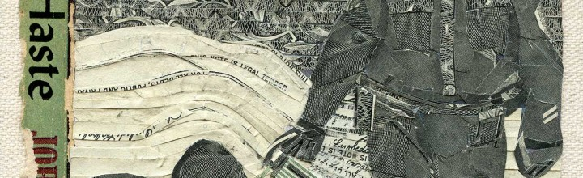

New Money Art
I’m working on some new money art that breaks ranks with the subject matter I have been consumed with for the past several years. Stay tuned, I hope to have an image to share soon… In the meantime, enjoy another look at this collage of Pepper Spray Cop rendered in US Money.
Repent in Haste Pepper Spray Cop!
Repent Pepper Spray Cop; REPENT! This is a collage (US Currency on a vintage book cover) that I created to donate to: Spread the Word” • An Art Auction Benefiting 826LA. I felt that is was about time that Pepper Spray Cop should brutalize protestors in an original artwork. Spread the Word is a one-night […]
Select Press for A Hero Never Fails at Freight + Volume
The press response for my show A Hero Never Fails has been stellar. Here are a few of the must reads: Art in Review by Ken Johnson Best in Show by Robert Shuster Giving up on Underdog, an Interview by Mayukh Sen Installation Artists at Chelsea Gallery… by Alison Martin […]
A Hero Never Fails – Freight + Volume, Aug. 4th
My first solo show in New York, A Hero Never Fails, opens at Freight + Volume on August 4th, 2011. The centerpiece of the exhibit, is a defeated caricature of the 60’s cartoon character Underdog titled “Hero.” The goofball “hero who never fails” has resigned to abject apathy. Strung out on the “super vitamin […]
New work available through Mark Moore
A few new taxcut pieces are now available through Mark Moore Gallery. Get em while they’re hot.. Bada Boom, 14″ x 11″ , US Currency on canvas, 2011 Visby, 14″ x 11″ , US Currency on canvas, 2011
PULSE Miami 2010 Preview – new TaxCut Work
Oh inter-webs, it is so satisfying to share some new work with you. The following works will be available at PULSE Miami through Freight + Volume: Pulse happens December 2-5, 2010 at the Ice Palace.Please contact me for additional details. All works 2010, US Currency on canvas. M1A1 14″ x 18″ Luv, 12″ x 12″ […]
PULSE Miami 2010 Video Preview
I’ll be shipping a number of new TaxCut works to the 2010 Pulse Miami Art Fair with Freight + Volume or Mark Moore Gallery. This short video tour of my studio highlights a few of the upcoming and available pieces bound for Miami next month. For more info contact Mark Moore Gallery.view on youtube
Top secret Thirst preview
Thirst will debut at Mark Moore Gallery, “Surviving the End of Your World” which opens July 10th, 2010. Thirst; Vinyl, Mixed Media, Electronics, 15′ x 15’x 5′, 2010. Here is a preview from the first day of installation: see you at the opening
Dave Hickey and Libby Lumpkin at UNM
These two need little introduction. It will be the art criticism version of lollapalooza. Dave Hickey“Restoring the Sisterhood of Art”7:30 PM ThursdayFebruary 11Keller HallCollege of Fine Arts, UNM …and on the next day: Libby Lumpkin“Who and How Many: How Design Shapes Its Market” 6:00 PM FridayFebruary 12Keller HallCollege of Fine Arts, UNM
announcing RECESS
The blog / archive / project journal for RECESS, my current and ongoing conceptual project, is now online. I have been quietly working on this project for the past year. New content will be continuously added until my next show in disaster city, summer 2010. Give a read, and come back often. It may save […]